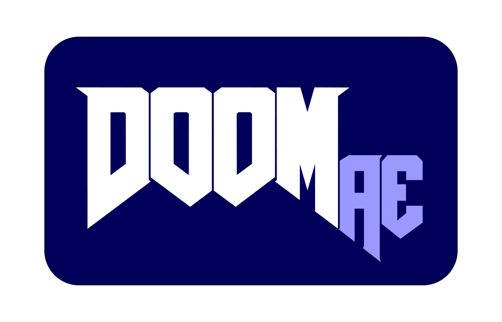
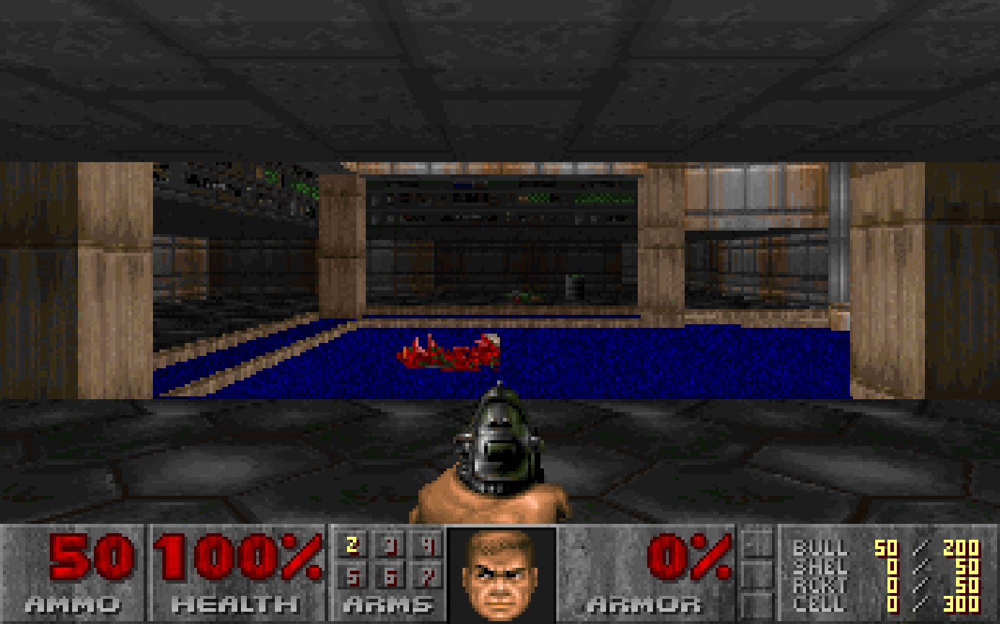
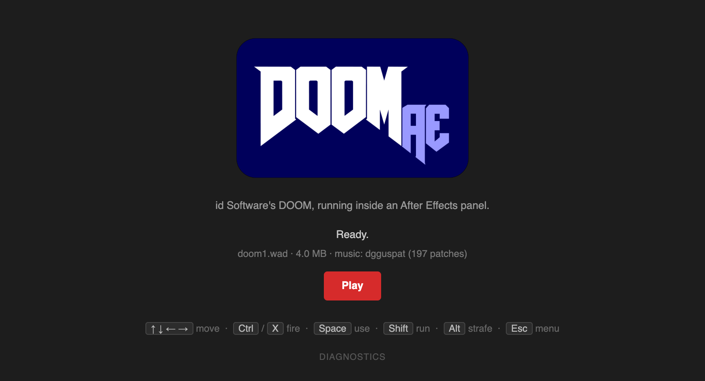
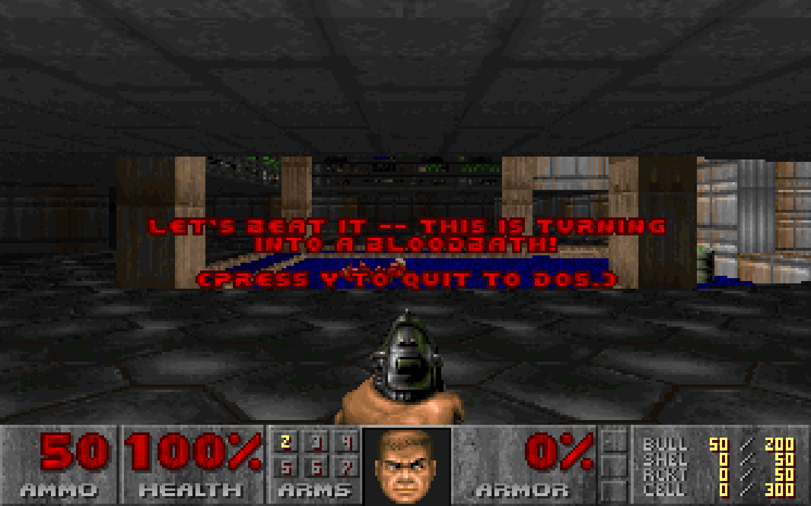

id Software's DOOM, running as a panel inside After Effects. It has been ported to everything else, so.
AEDoom is the real Doom engine compiled to WebAssembly and docked in After Effects as an extension panel. Knee-Deep in the Dead ships with it. Sound effects and music play, saves survive closing the panel or quitting AE, and the comp keeps rendering behind it.



- Install the extension — open the
.zxpwith a ZXP installer (aescripts ZXP Installer is free). - Restart After Effects and open Window → Extensions → AEDoom.
- Click Play, then click the game once so the panel has keyboard focus. Press Esc for the menu.
Cheats work. While the game has focus the panel keeps Doom's keys for itself, so AE's shortcuts pause until you click elsewhere; Cmd shortcuts still reach AE.
The extension is signed with a self-signed certificate — your ZXP installer may show an "unverified publisher" notice. That's expected.
The engine plays Doom's soundtrack through a General MIDI synthesizer that needs an instrument set, and the one Doom was written for belongs to Gravis, so it isn't bundled. Adding it takes a minute:
- Download dgguspat.zip from the idgames archive (the Gravis Ultrasound patches, 5 MB) and unzip it.
- On the AEDoom start screen click Add music… and choose the unzipped folder.
The patches are copied into your user library and picked up on the next Play, and they survive updates to the extension. Without them the game runs with sound effects only.
Save slots and settings are written to
~/Library/Application Support/AEDoom/saves/, per WAD, so
they outlive the panel, AE, and reinstalls. Own the full game? Drop
doom.wad or doom2.wad anywhere and use
Choose WAD… on the start screen. Freedoom works too.
After Effects 2024 or later (developed and tested on AE 2026, macOS; Windows untested). Everything runs locally in the panel — no accounts, no network calls. Doom engine © id Software, GPL-2.0, via doomgeneric and Emscripten.